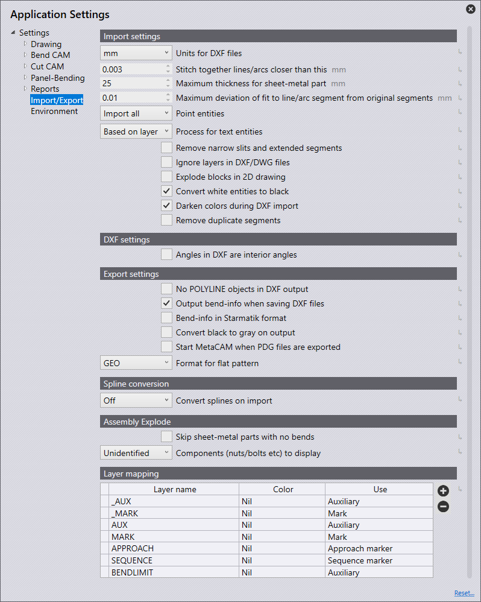

Importação/Exportação
Nesta seção, abordaremos a configuração de Ajustes de importação.

Clique no ícone Ajustes  na página inicial.
na página inicial.

Ajustes de importação
Nesta seção, abordaremos a configuração de Ajustes de importação. Clique no ícone Ajustes. Clique em Importar/Exportar e navegue até o Ajustes de importação.

Unidades para arquivos DXF - Defina para milímetros ou polegadas aqui.
Distância máxima entre elementos de contorno não reunidos - Defina este valor (0>1 mm). Ao importar uma peça que tenha linhas/arcos mais próximos do que o valor definido, o software irá costurá-los juntos automaticamente na importação.
Espessura máxima da chapa - Para reconhecer uma peça grande de chapa, o limite de reconhecimento de chapa precisaria ser aumentado. (10>40 mm) Este valor é definido automaticamente por padrão para 25 mm ou uma polegada, dependendo da unidade utilizada.
Unidades de pontos - A opção selecionada determinará como os pontos serão importados.
Importando todos - Todos os pontos serão importados e exibidos.
Pular pontos nas polilinhas - Isso ignora todos os pontos detectados nas polilinhas.
Pular todos - Isso ignora todos os pontos na importação, e nenhum é mostrado.
Ignorar os níveis nos arquivos DXF-/DWG - Desenhos DXF e DWG geralmente são criados em camadas diferentes. Com este ajuste, o software ignora essas camadas e move todos os objetos para a camada padrão.
Decompor os blocos em desenhos 2D - Divide agrupamentos durante a importação
Converter os objetos brancos em pretos - Ative esta configuração para converter objetos brancos em objetos pretos durante a importação.
Cores mais escuras durante a importação do DXF- Ative esta configuração para escurecer objetos coloridos durante a importação.
Remover segmentos duplicados - Ative esta configuração para remover qualquer geometria duplicada encontrada na peça ao importar.
Ajustes DXF
Nesta seção, abordaremos a configuração de Ajustes DXF. Clique no ícone Ajustes. Clique em Importar/Exportar e navegue até Ajustes DXF.

Os ângulos no arquivo dxf são ângulos de abertura. - Ative esta configuração para que os ângulos em um DXF sejam tratados como ângulos de abertura.
Ajustes de exportação
Nesta seção, abordaremos a configuração de Ajustes de exportação. Clique no ícone Ajustes. Clique em Importar/Exportar e navegue até Ajustes de exportação.

Nenhum objeto POLYLINE na edição DX - Normalmente, os contornos fechados são exibidos como polilinhas ao exportar DXFs. Alguns sistemas CAD não podem processar esta saída de dados. Com este ajuste, o software executa a saída do DXF com linhas e arcos. Estes arquivos podem ser lidos em todos os lugares, mas os arquivos criados são maiores e as conexões entre linhas e arcos são perdidas
Emitir informações de dobras ao exportar arquivos DXF. - Ative esta configuração para que um DXF exportado seja emitido com informações de dobra.
Informações Bend em formato Starmatik - Ligue este interruptor para emitir as informações de dobra no formato Starmatik. Isso é quando uma entidade de texto é posicionada exatamente no meio de cada linha que deve ser uma linha de dobra.
Na edição, converter preto em cinza - Ao exportar dados 2D, os objetos no arquivo DXF são exibidos em preto por padrão. Para poder reconhecer melhor os objetos nos programas CAD, este ajuste faz com que os objetos sejam apresentados em cinza na saída.
Iniciar MetaCAM com a exportação de arquivos PDG. - Ative esta configuração para que um arquivo PDG seja configurado automaticamente para abrir no MetaCAM
Formato de saída do desenrolamento - Ao exportar um padrão plano, isso pode ser definido para o formato de arquivo Geo, DXF ou PDG.
Conversão spline
Nesta seção, abordaremos a configuração de configurações Conversão spline. Clique no ícone Ajustes. Clique em Importar/Exportar e navegue até as configurações Conversão spline.

Converter splines durante a importação - Defina aqui se a conversão de estriado é desligada ou configurada para converter estriados em linhas ou arcos. Em qualquer caso, cada estriado será convertido em um objeto polilinha único que contém segmentos de linha ou segmentos de arco.
Cálculo dos pontos de apoio - O número de linhas ou arcos gerados é usando um dos dois mecanismos: passo ou desvio.
Comprimento por segmento de linha ou de arco - Se for escolhido Passo no cálculo da contagem de nós, defina aqui o comprimento de cada arco ou segmento de linha para quebrar o estriado usando este comprimento de passo.
Desvio máximo durante a aproximação - Se for escolhido Desvio no cálculo de contagem de nós, defina aqui o desvio máximo que é permitido entre o estriado liso original e a aproximação de linha ou arco. A polilinha é construída com o menor número de segmentos possível, mantendo o erro máximo dentro deste limite.
Dissolver conjunto
Nesta seção, abordaremos a configuração das configurações Dissolver conjunto. Clique no ícone Ajustes. Clique em
Importar/Exportar e navegue até as configurações Dissolver conjunto 
Ignorar peças de corte - Ao explodir um conjunto, ligar este interruptor mostrará apenas as peças de chapa com linhas de dobra. Desligar esta opção exibirá todas as peças no conjunto.
Exibição dos componentes (porcas de inserção, pinos, conformações por punção …) - Use esta configuração para selecionar quais opções exibir ao explodir um conjunto que contém outros componentes.
Desligado - Apenas as peças de chapa são exibidas depois de explodir, e outras porcas/parafusos não.
desconhecido - Apenas os componentes que ainda não foram identificados no software são exibidos.
Todos - Todos os componentes são exibidos.
Atribuição de camada

Nesta seção, abordaremos a configuração de Atribuição de camada. Clique no ícone Ajustes. Clique Importar/Exportar e navegue para as configurações Atribuição de camada.
Nesta seção, as camadas usadas em peças sendo importadas no software podem ser mapeadas automaticamente quanto à sua funcionalidade (uso).
Se uma peça importada tiver uma camada de MARCAÇÃO, isso pode ser definido como usar automaticamente a camada Mark (marcação) no software.
Nome da camada - Este é o nome da camada que, se uma peça for importada com isso, será usada a funcionalidade definida no painel 'Usar'.
utilizar - Esta é a funcionalidade da camada. As diferentes opções disponíveis são:
Padrão - Esta é a camada padrão a ser usada para CAM.
Meios auxiliares - Uma camada auxiliar, não deve ser usada para CAM.
Marcar - Quaisquer entidades nesta camada serão marcadas, não cortadas.
Marcador de aproximação - Entidades de ponto indicando a posição de aproximação do laser.
Marcador de sequência - Marcadores de texto indicando a ordem de sequência dos contornos.
Centro da conformação - Marca de centro para formação (ponto ou L pequeno).
Transformar pegada - O contorno (pegada) de uma formação.
Evaporar - Esta camada seria usada para distinguir a queima do filme.
Marcação de ponto - Esta camada seria usada para códigos QR.
Informação - Esta é uma camada apenas informativa.